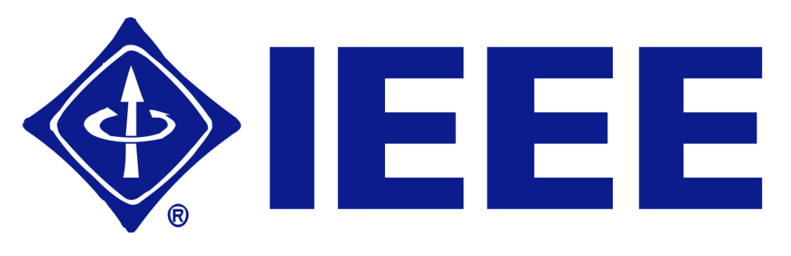
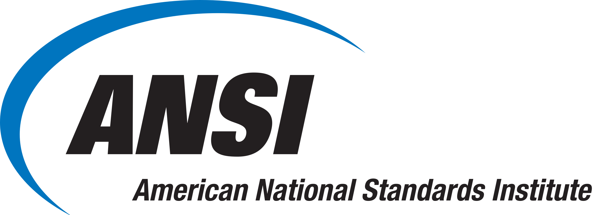
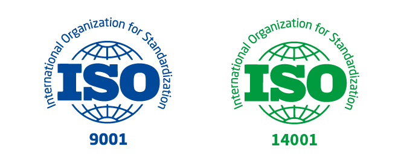
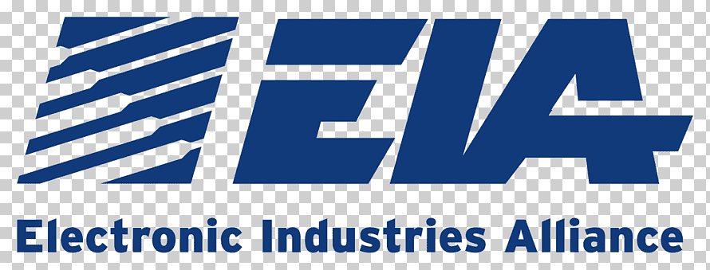
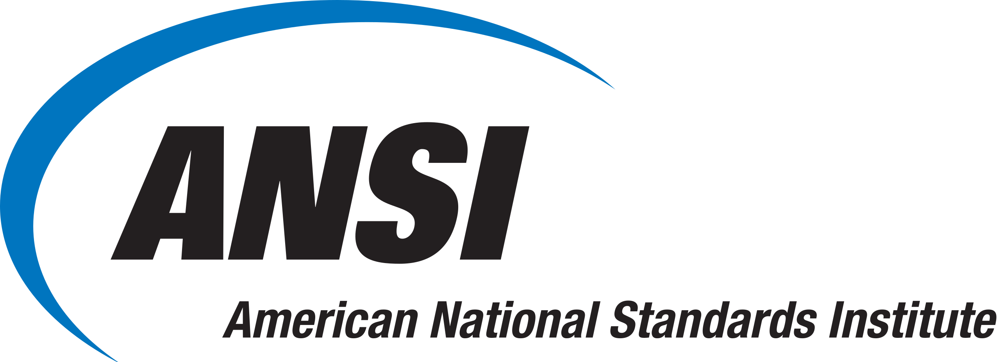
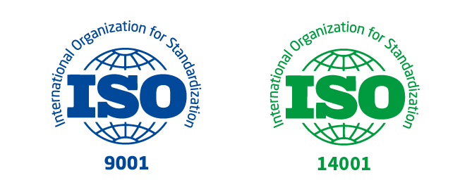
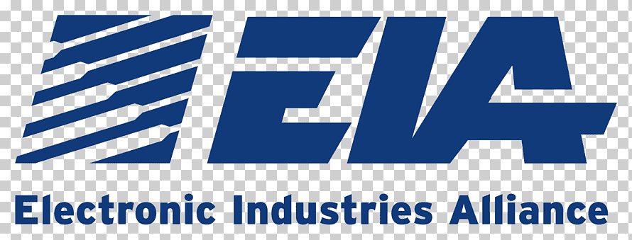

| IEEE | El Instituto de Ingenieros Eléctricos y Electrónicos |
|---|---|
| Definicion | Es una organización profesional sin fines de lucro dedicada al avance de la tecnologia en diversas diciplinas, que incluye ingenieria electrica y electronica, telecomunicaciones e ingenieriaboimédica. Tambien proporciona un foro para profesionales, académicos e industrias para intercambiar ideas, compartir conocimientos y colaborar en el desarrollo de tecnologías innovadoras. |
| Principales normas | Unas de las normas mas importantes de IEEE son: IEEE 802.11 (Wi-Fi). Equivalente a norma colombiana: Es un conjunto de estándares para redes inalámbricas desarrollado por el Instituto de Ingenieros Eléctricos y Electrónicos (IEEE). Define los protocolos para la transmisión de datos sin cables, operando en frecuencias de 2.4 GHz y 5 GHz. Los dispositivos Wi-Fi, como routers y dispositivos móviles, utilizan estos estándares para la comunicación inalámbrica. IEEE 802.3 (Ethernet). Equivalente a norma colombiana: Es un conjunto de estándares para redes de área local (LAN). Define las normas para la transmisión de datos mediante cables, utilizando protocolos de acceso al medio y especificando los formatos de trama. Ethernet es ampliamente utilizado para la conexión de dispositivos en redes cableadas. IEEE 754 (Formato de Punto Flotante). Equivalente a norma colombiana: Es un estándar para representar números de punto flotante en sistemas informáticos. Define formatos de representación binaria de precisión simple y doble, especificando la forma en que se almacenan los números con fracciones decimales en la memoria de la computadora. Este estándar es crucial para garantizar la consistencia en las operaciones aritméticas de coma flotante en diversos dispositivos y arquitecturas. |
| Logo |  |
| Impervinculo de la pagina |
Infografia
Normativa IEEE
IEEE
ANSI
ANSI
ANSI
Instituto Nacional Estadounidense de Estándares
Definicion
Es una organizacion privada que coordina y supervisa el desarrollo de estandares voluntarios para una variedad de insdustrias en Estados Unidos.
Pero Ansi no desarrolla directamente los estandares, facilita y coordina el proceso de creacion de estandares a traves de comites tecnicos y organizaciones de desarrollo de estandares.
Principales normas
Sus principales normas son:
ANSI/ISO 9001: Sistemas de gestion de calidad.
Equivalente a norma colombiana: Es un estándar internacional que establece los requisitos para un sistema de gestión de calidad efectivo. Enfocado en la mejora continua y la satisfacción del cliente, abarca aspectos como la planificación, el control de procesos y la revisión sistemática de la eficacia del sistema. La certificación según la norma 9001 es reconocida globalmente y es aplicada por organizaciones para demostrar su compromiso con la calidad y la excelencia.
ANSI/ASME B16.5: Especifica la tolerancia de las tuberias y sus accesorios.
Equivalente a norma colombiana: Define los requisitos para asegurar la compatibilidad y la intercambiabilidad entre diferentes componentes de tuberías, como bridas y juntas. Esta norma es fundamental en la industria para garantizar la integridad y la eficiencia en la instalación y operación de sistemas de tuberías.
ANSI/IEEE 754: Ayuda a la representacion y manipulacion del formato de punto flotante.
Equivalente a norma colombiana: Establece las reglas para la representación binaria de números de punto flotante, especificando formatos de precisión simple y doble, así como operaciones aritméticas consistentes. Este estándar es crucial para garantizar la uniformidad en la representación y cálculos de números con decimales en entornos computacionales.
Logo

Impervinculo de la pagina
Icontec
Icontec
Icontec
Instituto Colombiano de Normas Técnicas y Certificación
Definicion
Es una entidad Colombiana dedicada a la normalizacion, la Certificació, la informacion y la evaluacion de conformidad.
Icontec a desempeñado un papel clave en el desarrollo y la promocion de estandares tecnicos de calidad en colombia y en la region latinoamericana.
Principales normas
Sus normas se mantienen en diversas areas y sus normas mas destacadas son:
NTC (Norma Técnica Colombiana): Cubre aspectos en calidad, seguridad, eficiencia y sostenibilidad de productos y procesos.
Equivalente a norma colombiana: Estas normas buscan asegurar la calidad, seguridad y eficiencia en diversos sectores de la industria colombiana, proporcionando estándares reconocidos nacional e internacionalmente. La implementación de las NTC contribuye a la mejora de la competitividad y la conformidad con estándares internacionales en el ámbito colombiano.
ISO 9001: Rige los requisitos para implementar y mantener un sistema de gestion de calidad de organizacion.
Equivalente a norma colombiana: Enfocada en la satisfacción del cliente, abarca áreas como la planificación, control de procesos y revisión sistemática. La certificación ISO 9001 es ampliamente reconocida, demostrando el compromiso de una organización con la calidad y la excelencia en la gestión.
ISO 14001: ICONTEC también trabaja con la norma ISO 14001, que se centra en sistemas de gestión ambiental, promoviendo prácticas sostenibles y responsables con el medio ambiente.
Equivalente a norma colombiana: Diseñada para ayudar a las organizaciones a manejar y mejorar su desempeño ambiental, abarca aspectos como la evaluación de impactos ambientales, el cumplimiento legal y la reducción de la huella ecológica. La certificación ISO 14001 demuestra el compromiso de una entidad con la sostenibilidad y la gestión responsable del medio ambiente.
Logo

Impervinculo de la pagina
Iso
Iso
Iso
Organización Internacional de Normalización
Definicion
Es una entidad independiente que se dedica a desarrollar y publicar estandares Internacionales, tambien facilitar el intercambio de bienes y servicios, y promover la cooperacion en la esfera de la normalizacion tecnica.
Principales normas
Sus normas abarcan diversas areas y sectores y las mas importantes son:
ISO 9001: Sistemas de gestión de la calidad.
Equivalente a norma colombiana: Centrada en la mejora continua y la satisfacción del cliente, abarca aspectos como la planificación, el control de procesos y la evaluación sistemática para asegurar la conformidad con los estándares de calidad. La certificación ISO 9001 es reconocida globalmente y demuestra el compromiso de una organización con la excelencia en la calidad.
ISO 14001: Sistemas de gestión ambiental.
Equivalente a norma colombiana: Se centra en la identificación y control de impactos ambientales, la conformidad legal y la mejora continua para reducir la huella ecológica. La certificación ISO 14001 demuestra el compromiso de una entidad con la sostenibilidad y la gestión responsable del medio ambiente.
ISO 27001: Sistemas de gestión de seguridad de la información.
Equivalente a norma colombiana: Se enfoca en la protección de la confidencialidad, integridad y disponibilidad de la información, abordando riesgos de seguridad de manera sistemática. La certificación ISO 27001 demuestra el compromiso de una organización con la gestión efectiva de la seguridad de la información.
Logo

Impervinculo de la pagina
TIA/EIA
TIA/EIA
TIA/EIA
Industria y asociacion de telecomunicaciones/Industria de alianza electronica
Definicion
La entidada EIA es un proceso utilizado para evaluar los posibles impactos ambientales y sociales de proyectos propuestos antes de que se lleven a cabo.
Principales normas
Directrices de la UNEP (Programa de las Naciones Unidas para el Medio Ambiente).
Equivalente a norma colombiana: Estas directrices buscan guiar prácticas sostenibles y políticas ambientales, promoviendo la conservación y el uso sostenible de los recursos naturales. Su objetivo es fomentar la cooperación internacional y la adopción de medidas para abordar cuestiones ambientales cruciales a nivel mundial.
Convenio de la UNEP(Progarama de naciones unidas para el medio ambiental).
Equivalente a norma colombiana: Estos convenios buscan promover la cooperación global en la gestión sostenible de recursos, conservación de la biodiversidad y mitigación del cambio climático. La UNEP desempeña un papel crucial en la facilitación de acuerdos y la promoción de prácticas que contribuyan a la preservación del medio ambiente a nivel mundial.
Convenio sobre Evaluación del Impacto Ambiental en un Contexto Transfronterizo (Convenio de Espoo).
Equivalente a norma colombiana: Su objetivo es garantizar que los países participantes consideren y evalúen los posibles efectos ambientales de proyectos propuestos antes de su implementación, particularmente cuando pueden afectar a países vecinos. Este convenio busca fomentar la cooperación y la transparencia en la toma de decisiones que puedan tener consecuencias ambientales más allá de las fronteras nacionales.
Logo

Impervinculo de la pagina
ANSI
| ANSI | Instituto Nacional Estadounidense de Estándares |
|---|---|
| Definicion | Es una organizacion privada que coordina y supervisa el desarrollo de estandares voluntarios para una variedad de insdustrias en Estados Unidos. Pero Ansi no desarrolla directamente los estandares, facilita y coordina el proceso de creacion de estandares a traves de comites tecnicos y organizaciones de desarrollo de estandares. |
| Principales normas | Sus principales normas son: ANSI/ISO 9001: Sistemas de gestion de calidad. Equivalente a norma colombiana: Es un estándar internacional que establece los requisitos para un sistema de gestión de calidad efectivo. Enfocado en la mejora continua y la satisfacción del cliente, abarca aspectos como la planificación, el control de procesos y la revisión sistemática de la eficacia del sistema. La certificación según la norma 9001 es reconocida globalmente y es aplicada por organizaciones para demostrar su compromiso con la calidad y la excelencia. ANSI/ASME B16.5: Especifica la tolerancia de las tuberias y sus accesorios. Equivalente a norma colombiana: Define los requisitos para asegurar la compatibilidad y la intercambiabilidad entre diferentes componentes de tuberías, como bridas y juntas. Esta norma es fundamental en la industria para garantizar la integridad y la eficiencia en la instalación y operación de sistemas de tuberías. ANSI/IEEE 754: Ayuda a la representacion y manipulacion del formato de punto flotante. Equivalente a norma colombiana: Establece las reglas para la representación binaria de números de punto flotante, especificando formatos de precisión simple y doble, así como operaciones aritméticas consistentes. Este estándar es crucial para garantizar la uniformidad en la representación y cálculos de números con decimales en entornos computacionales. |
| Logo |  |
| Impervinculo de la pagina |
Icontec
| Icontec | Instituto Colombiano de Normas Técnicas y Certificación |
|---|---|
| Definicion | Es una entidad Colombiana dedicada a la normalizacion, la Certificació, la informacion y la evaluacion de conformidad. Icontec a desempeñado un papel clave en el desarrollo y la promocion de estandares tecnicos de calidad en colombia y en la region latinoamericana. |
| Principales normas | Sus normas se mantienen en diversas areas y sus normas mas destacadas son: NTC (Norma Técnica Colombiana): Cubre aspectos en calidad, seguridad, eficiencia y sostenibilidad de productos y procesos. Equivalente a norma colombiana: Estas normas buscan asegurar la calidad, seguridad y eficiencia en diversos sectores de la industria colombiana, proporcionando estándares reconocidos nacional e internacionalmente. La implementación de las NTC contribuye a la mejora de la competitividad y la conformidad con estándares internacionales en el ámbito colombiano. ISO 9001: Rige los requisitos para implementar y mantener un sistema de gestion de calidad de organizacion. Equivalente a norma colombiana: Enfocada en la satisfacción del cliente, abarca áreas como la planificación, control de procesos y revisión sistemática. La certificación ISO 9001 es ampliamente reconocida, demostrando el compromiso de una organización con la calidad y la excelencia en la gestión. ISO 14001: ICONTEC también trabaja con la norma ISO 14001, que se centra en sistemas de gestión ambiental, promoviendo prácticas sostenibles y responsables con el medio ambiente. Equivalente a norma colombiana: Diseñada para ayudar a las organizaciones a manejar y mejorar su desempeño ambiental, abarca aspectos como la evaluación de impactos ambientales, el cumplimiento legal y la reducción de la huella ecológica. La certificación ISO 14001 demuestra el compromiso de una entidad con la sostenibilidad y la gestión responsable del medio ambiente. |
| Logo |
|
| Impervinculo de la pagina |
Iso
| Iso | Organización Internacional de Normalización |
|---|---|
| Definicion | Es una entidad independiente que se dedica a desarrollar y publicar estandares Internacionales, tambien facilitar el intercambio de bienes y servicios, y promover la cooperacion en la esfera de la normalizacion tecnica. |
| Principales normas | Sus normas abarcan diversas areas y sectores y las mas importantes son: ISO 9001: Sistemas de gestión de la calidad. Equivalente a norma colombiana: Centrada en la mejora continua y la satisfacción del cliente, abarca aspectos como la planificación, el control de procesos y la evaluación sistemática para asegurar la conformidad con los estándares de calidad. La certificación ISO 9001 es reconocida globalmente y demuestra el compromiso de una organización con la excelencia en la calidad. ISO 14001: Sistemas de gestión ambiental. Equivalente a norma colombiana: Se centra en la identificación y control de impactos ambientales, la conformidad legal y la mejora continua para reducir la huella ecológica. La certificación ISO 14001 demuestra el compromiso de una entidad con la sostenibilidad y la gestión responsable del medio ambiente. ISO 27001: Sistemas de gestión de seguridad de la información. Equivalente a norma colombiana: Se enfoca en la protección de la confidencialidad, integridad y disponibilidad de la información, abordando riesgos de seguridad de manera sistemática. La certificación ISO 27001 demuestra el compromiso de una organización con la gestión efectiva de la seguridad de la información. |
| Logo |  |
| Impervinculo de la pagina |
TIA/EIA
| TIA/EIA | Industria y asociacion de telecomunicaciones/Industria de alianza electronica |
|---|---|
| Definicion | La entidada EIA es un proceso utilizado para evaluar los posibles impactos ambientales y sociales de proyectos propuestos antes de que se lleven a cabo. |
| Principales normas | Directrices de la UNEP (Programa de las Naciones Unidas para el Medio Ambiente). Equivalente a norma colombiana: Estas directrices buscan guiar prácticas sostenibles y políticas ambientales, promoviendo la conservación y el uso sostenible de los recursos naturales. Su objetivo es fomentar la cooperación internacional y la adopción de medidas para abordar cuestiones ambientales cruciales a nivel mundial. Convenio de la UNEP(Progarama de naciones unidas para el medio ambiental). Equivalente a norma colombiana: Estos convenios buscan promover la cooperación global en la gestión sostenible de recursos, conservación de la biodiversidad y mitigación del cambio climático. La UNEP desempeña un papel crucial en la facilitación de acuerdos y la promoción de prácticas que contribuyan a la preservación del medio ambiente a nivel mundial. Convenio sobre Evaluación del Impacto Ambiental en un Contexto Transfronterizo (Convenio de Espoo). Equivalente a norma colombiana: Su objetivo es garantizar que los países participantes consideren y evalúen los posibles efectos ambientales de proyectos propuestos antes de su implementación, particularmente cuando pueden afectar a países vecinos. Este convenio busca fomentar la cooperación y la transparencia en la toma de decisiones que puedan tener consecuencias ambientales más allá de las fronteras nacionales. |
| Logo |  |
| Impervinculo de la pagina |